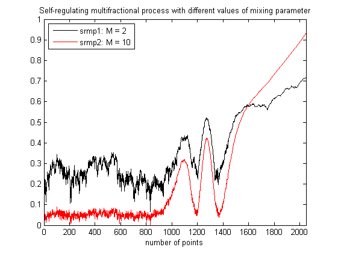
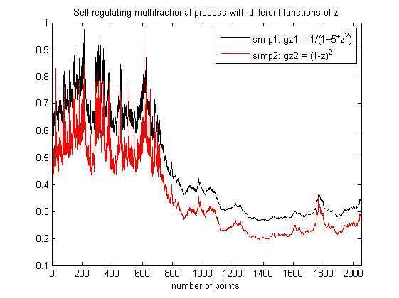

| FRACLAB Functions |
|
Generates a Self-Regulating Multifractional Process from a field of fractional brownian motions using an iterative method
SRMP = srmpfbm(N,GZ)
SRMP = srmpfbm(...,'Propertyname',Propertyvalue)
SRMP = srmpfbm(N,H) Generates the self-regulating multifractional process, SRMP, using a sample size, N, and a function of z, GZ. The parameter N is a positive integer and the parameter GZ is a vector whose values correspond to a function from (0,1) to (0,1).
|
The function G(z) link the pointwise Holder exponent to the amplitude |
SRMP = srmpfbm(...,'Propertyname',Propertyvalue) Generates the self-regulating multifractional process, SRMP, applying the specified property settings. The Property setting can be choosen from the list below:
| Property | Purpose |
|---|---|
| 'shape' |
The SRMP is computed using a specific deterministic prescribed shape, given by the
function Ft and the mixing parameter, M. |
| 'seed' |
The SRMP is computed with a specific random seed, SEED. This is useful to generate the same path several times or to compare the paths of different SRMPs. |
N = 1024; z = linspace(0,1,N); gz = eval('1./(1+5*z.^2)');
x = srmpfbm(N,gz);
figure; plot(z,x);
title('Self-regulating multifractional process'); xlabel('time');

N = 2048; z = linspace(0,1,N); gz = eval('z');
t = linspace(0,1,N); Ft = eval('.25+1/4.*t.^2.*(1-cos(5*pi*(1./(1+exp(-20*(t-0.6))))))');
srmp1 = srmpfbm(N,gz,'shape',{Ft,2},'seed',10);
srmp2 = srmpfbm(N,gz,'shape',{Ft,10},'seed',10);
figure; plot(srmp1,'k'); hold on; plot(srmp2,'r');
legend('srmp1: M = 2','srmp2: M = 10','Location','NorthWest');
title('Self-regulating multifractional process with different values of mixing parameter');
xlabel('number of points');xlim([0 N])

N = 2048; z = linspace(0,1,N);
gz1 = eval('1./(1+5*z.^2)'); gz2 = eval('(1-z).^2');
srmp1 = srmpfbm(N,gz1,'seed',100);
srmp2 = srmpfbm(N,gz2,'seed',100);
figure; plot(srmp1,'k'); hold on; plot(srmp2,'r');
legend('srmp1: gz1 = 1/(1+5*z^2)','srmp2: gz2 = (1-z)^2','Location','NorthEast');
title('Self-regulating multifractional process with different functions of z');
xlabel('number of points');xlim([0 N])

[1] O. Barrière, "Synthèse et estimation de mouvements Browniens multifractionnaires et
autres processus à régularité prescrite. Définition du processus autorégulé
multifractionnaire et applications", PhD Thesis, (2007).
[2] O. Barrière, J. Lévy-Véhel, "Intervalles interbattements cardiaques et Processus Auto-Régulé
Multifractionnaire," Journal de la Société Française de Statistique, Vol. 150, No. 1, (2009).
| |
spotted | srmpfbm2d | |